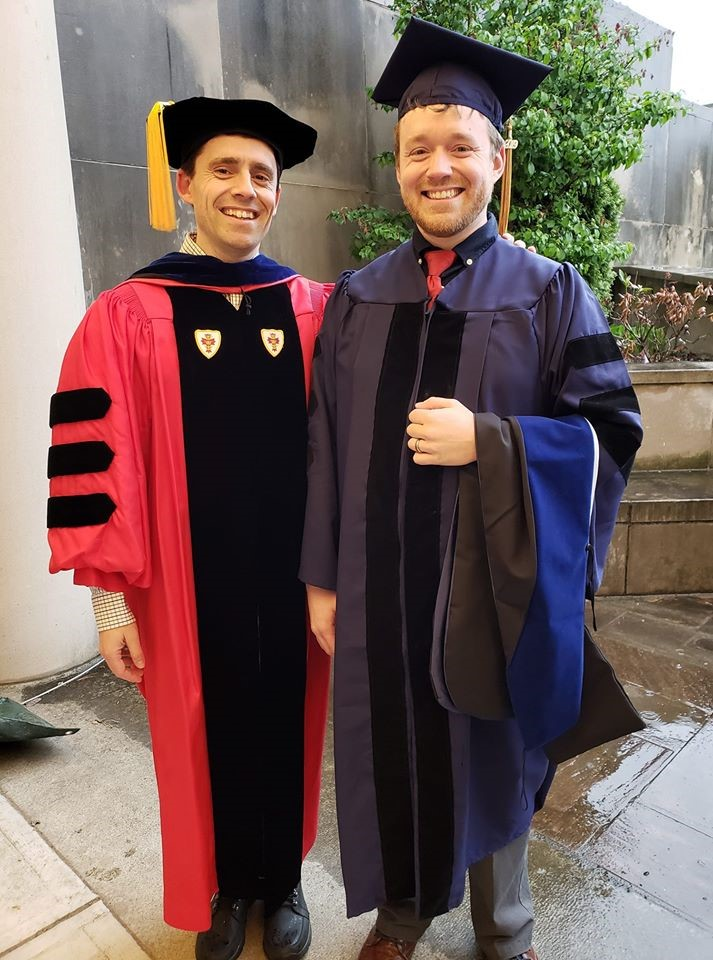

Robert JS McDonald
Lecturer in Mathematics, Yale University
robert.js.mcdonald@mathrjsm.comSee my bio 
Lecturer in Mathematics, Yale University
robert.js.mcdonald@mathrjsm.comCurrent research interests include number theory, arithmetic geometry, elliptic curves, and Galois representations. My thesis, with advisor Álvaro Lozano-Robledo, focuses on classifying torsion subgroups of elliptic curves over function fields of genus zero and one. Recently, I have become interested in torsion subgroups of elliptic curves over function fields of hyperelliptic curves, and with this, bounding the gonality of certain families of modular curves.
I believe the keys to a successful learning environment are creating a community in and out of the classroom, promoting student-centric learning, being open to innovation, and frequent self-introspection.
My goal is for my students to have fun learning math. This is why I teach. Especially when I'm teaching a terminal math course, I really feel like the goal of learning actual mathematical procedures is second to getting the students to have a good experience with math. Being exposed and forced to work things out at least once is, of course, a good thing, but anyone can look up an integral in a table of integrals. If my students walk away with a better appreciation for the subject, then I feel that I've done my job.
My students' classroom is wholly inclusive of all races, colors, national origins, religions, socioeconomic statuses, sexes, ages, sexual orientations, disabilities, and gender identities and expressions.
I care deeply about making sure that my students feel included and represented in my classroom. On the first day of class, I ask them to reflect on questions like: Whose input matters in this community? How can we make others feel safe and listened to? How should we validate ideas? What steps should we take when we feel our contract has been violated? I ask the students to collect their ideas, and post what they come up with on our course website. This is an important opportunity for an open discussion about inclusivity. Throughout the semester, we check in and evaluate how effectively we are meeting our contract, or suggest what should be changed.
I try to show my students the importance of different perspectives and backgrounds in problem solving. I try to do this by posing examples for which there are many methods that lead to a solution, and asking students to discuss them with each other in groups. I've purposefully designed these problems to have many different approaches. First, I have them group up and talk about the different ideas they have to tackle the problem. Then, they lead the class in a discussion about each approach and its effectiveness.
At the time of writing this, I've never tried flipping a classroom. I've made many videos for my students and posted guided note-taking sheets, but I've never had the opportunity to entirely flip a classroom. Next semester, I will be teaching an uncoordinated course, a multi-variable calculus/linear algebra hybrid for business and economics majors. I will be working closely with the departments that this course serves to get a good idea of how to best teach these students. I'm hoping to use this as an opportunity to add more asynchronous content. My hope is to have the majority of instructional time take place outside of the classroom, and to use class time to explore the connections between the math we are learning, and the applications to the students fields. The goal will be to take our time through the material and give each topic the respect it deserves.
Family and Home
 Currently, I live in Middletown, CT, with my wife, Kayla, and our newborn son, Andrew, born June 2019. We are absolutely in love with him.
We also have a cat, Lemma, who's been with us since I started graduate school. Kayla and I love to travel, and have taken a trip
every year since we met. Most notable was our two-month cross country trip in 2016. We took a very awkward route to California which saw us in
Nashville, St. Louis, New Mexico, the Grand Canyon, and Vegas. Our route back was more direct. We loved seeing the Grand Canyon, the redwoods, Yosemite, Yellowstone, and so much more.
Currently, I live in Middletown, CT, with my wife, Kayla, and our newborn son, Andrew, born June 2019. We are absolutely in love with him.
We also have a cat, Lemma, who's been with us since I started graduate school. Kayla and I love to travel, and have taken a trip
every year since we met. Most notable was our two-month cross country trip in 2016. We took a very awkward route to California which saw us in
Nashville, St. Louis, New Mexico, the Grand Canyon, and Vegas. Our route back was more direct. We loved seeing the Grand Canyon, the redwoods, Yosemite, Yellowstone, and so much more.
I've been living in Connecticut since I was six years old. I grew up in a small town called Scotland, about 45 minutes east of Hartford, CT. Scotland is a very small town, with a population of about 1700 people. There were 20 students in my class at primary school, and with two other towns, Chaplin and Hampton (with a total population of around 4000 between all three), I had a high school graduating class of 30 students. Honestly, I loved the experience of a small school and a small community, which is why I ended up going to a small local community college and Eastern Connecticut State University, a small liberal arts college in Willimantic, CT, to complete my bachelor's in mathematics. ECSU was by far the best choice for me; they had 5000 undergraduates, and my class sizes were rarely over 10-15 students. The liberal arts philosophy fostered great relationships between me, my class, and my professors, and I left feeling more well-rounded than I would have with a more pre-professional education at a larger university.
While finishing up at Eastern, I spent some time working as a metal cutting engineer at Spirol International in Danielson, CT. Tere, I designed side and end-work cutting tools for multispindle lathes. It was very fun, but ultimately, I decided my true passion was for math research and teaching. That's when I decided to go to the University of Connecticut (a not so small school) to pursue my PhD in mathematics, which I received in May of 2019!
I love to hike, bike, and run, though I'm trying to get back into the latter. I'm really into table top RPGs, and may have dabbled a little bit in LARP (don't tell anyone). I'm equally interested in video games, and fill a lot of my "free time" playing new and retro games. Finally, I love to sing and play music. I'm in the Vernon Chorale, a small choral ensemble in Vernon, and I'm getting ready to play the saxophone in the Middletown Symphonic Band. I don't think I'm particularly good at either, but it's an amazing outlet. I've run a few half marathons, and one full marathon (where "run" is an operative term). I've also done a rugged maniac, but my all time favorite was the Tough Mudder!